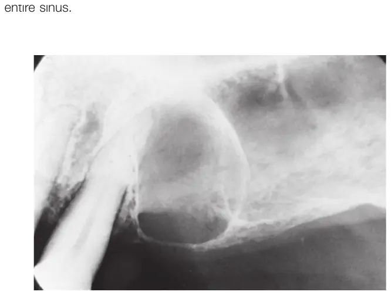
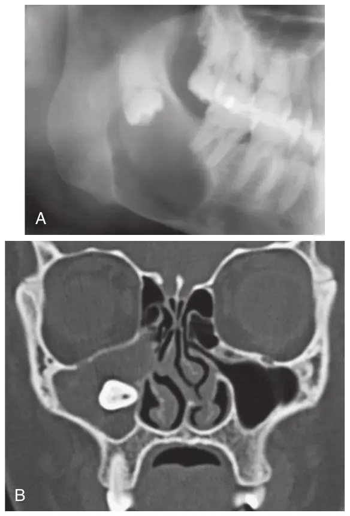

نسخه استخراجشده؛ ترجمه یا تأیید علمی انجام نشده است. وضعیت: captured
هدف اول — ریشهکنی وضعیت پاتولوژیک. هدف درمانی هر عمل جراحی برداشتی این است که کل ضایعه را بردارد و هیچ سلولی باقی نگذارد که بتواند تکثیر شود و عود بسازد.

ولی روش رسیدن به این هدف بسیار متفاوت است و به ماهیت ضایعه بستگی دارد — و اینجا به یک جملهی تکاندهنده میرسیم:
و نتیجهای که از این گرفته میشود، اصل محوری این یونیت است: پس ضروری است که پیش از انجام هر عمل جراحی برداشتی بزرگ، ضایعه با بیوپسی از نظر بافتشناختی شناسایی شود. تنها آنگاه میتوان عمل جراحی مناسب را برگزید تا ضایعه با کمترین تخریب ممکن بافت طبیعی مجاور ریشهکن شود.
هدف دوم — بازتوانی عملکردی بیمار. اگرچه ریشهکنی بیماری شاید مهمترین هدف درمان باشد، بهتنهایی اغلب برای درمان جامع بیمار کافی نیست.
پس از رسیدن به هدف اول، مهمترین ملاحظه، برخورد با نقصهای باقیمانده از جراحی برداشتی است — و این نقصها طیف وسیعی دارند:
و یک قاعدهی زمانبندی که همهجا تکرار میشود: بهترین نتایج وقتی به دست میآیند که اعمال بازسازی آینده پیش از برداشتن ضایعه در نظر گرفته شوند. روشهای پیوند، اصول فیکساسیون، کمبودهای بافت نرم، بازتوانی دندانی، و آمادهسازی بیمار باید پیش از عمل کاملاً ارزیابی و بهقدر کافی مدیریت شوند.
تعریف: کیست عموماً بهعنوان کیسهای با پوشش اپیتلیال که از مایع یا مادهی نرم پُر شده تعریف میشود.

و چرا کیستها در فک شایعاند؟ شیوعشان به اپیتلیوم فراوانی مربوط میشود که در حین تشکیل دندان درون استخوان تکثیر مییابد، و در امتداد خطوطی که سطوح زوائد جنینی فک به هم جوش میخورند.
پس کیستهای فک دو دستهاند: (۱) آنهایی که از اپیتلیوم ادنتوژنیک برمیخیزند (کیستهای ادنتوژنیک)، و (۲) آنهایی که از اپیتلیوم دهانی گیرافتاده میان زوائد در حال جوش خوردن در جنینزایی برمیخیزند (کیستهای فیشورال).
و یک اعتراف صادقانه: محرکی که سلولهای اپیتلیال خفته را وادار به تکثیر در بافت همبند اطراف میکند، هنوز تعیین نشده است. ولی التهاب به نظر میرسد در کیستهایی که از گرانولومهای پالپ عفونی برمیخیزند نقش عمدهای دارد.
و مهمترین جملهی این اسلاید: قطعات باقیماندهی غشای کیستیک تمایل دارند کیستهای عودکننده بسازند — که برداشت کامل پوشش اپیتلیال کیست در زمان عمل را ضروری میکند.
رفتار بالینی کیستها:
ظاهر رادیوگرافیک — و دو نکتهی تشخیصی: ظاهر کیستها مشخصهدار است و محیطی متمایز و متراکم از استخوان واکنشی (استئیت متراکمشونده) با مرکزی رادیولوسنت نشان میدهد.
و یک الزام بیقید و شرط: پوشش اپیتلیال کیستها در موارد نادر دچار تغییرات آملوبلاستیک یا بدخیم میشود — پس تمام بافت کیستیک برداشتهشده باید برای معاینهی پاتولوژیک ارسال شود.
و چهار روش پایهی درمان کیستهای فک: (۱) انوکلئاسیون، (۲) مارسوپیالیزاسیون، (۳) ترکیب مرحلهای این دو، و (۴) انوکلئاسیون با کورتاژ. هر چهار، موضوع درسهای بعدیاند.